Hi, my name is Sydney.
About Me
I am student at MacEwan University in my last semester of my second degree in Computer Science with a 3.87 GPA. My first degree is from the University of Alberta in Mechanical Engineering. I have worked on and I am working on a wide range of projects, from designing and building a 4D Body Scanner for use in a telehealth setting, to researching, designing, and building a tutoring platform, to building a model to classify and predict the progression of dysarthria in ALS patients.
My classwork has given me a strong foundation in data structures, databases, machine learning, data science and software engineering principles. I have also gained experience in computer vision and signal processing through various projects.
My passion is in building technology that helps people reclaim autonomy and control in an otherwise chaotic world. I hope to combine my love of problem-solving, mathematics, and research to look
at the brain in a novel way, inspiring the next generation of biotechnology to put the well-being of the human at its frontier.
Education
Bachelor of Science in Computer Science
MacEwan University | 2023 - Present
Anticipated completion: December 2025 | GPA: 3.87
- Experience with Python, C, C#.net, SQL and Azure Data Studio
- Built a fully functional game in Python
- Courses in Machine Learning, Data Mining, Artificial Intelligence, Robotics, Software Engineering, Databases, Data Structures, Object-Oriented Programming, UX/UI Design
- Mathematical Courses in Calculus I, II, & III, Linear Algebra I & II, Graph Theory, Set Theory, and Logic
- Statistics Courses in Probability and Regression
Bachelor of Science in Mechanical Engineering
University of Alberta | 2010 - 2016
- Built intuitive foundation of Mechanics and 3D Modelling using SolidWorks
- Coursework in Thermodynamics, Heat Transfer, HVAC Systems, Mechanical Design, Fluid Mechanics, Electricity and Magnetism, Classical Mechanics, Quantum Mechanics
My Projects
Computational Modeling of Speech-Based Biomarkers for ALS Assessment
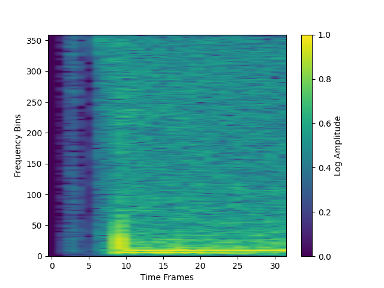
Currently participating in the Speech Analysis for Neurodegenerative Diseases (SAND) challenge, organized by ICAR-CNR's Institute for High Performance Computing and Networking. Developing machine learning models for multi-class classification to categorize dysarthria severity and predictive modeling to forecast disease progression...
Read moreTutle: A Tutor-Student Marketplace
Co-leading a team of 7 developers to build a comprehensive commercial tutoring mobile application that connects students with qualified tutors through a secure, feature-rich platform. Built with React Native to provide a seamless cross-platform experience on both iOS and Android devices...
Read more4D Body Scanning for Remote Health Monitoring
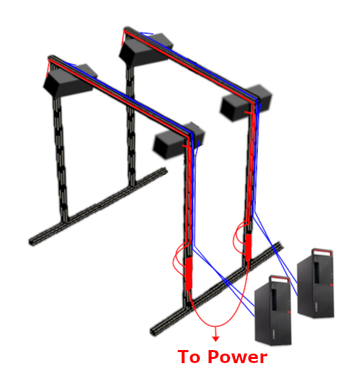
Collaborated with a fellow student under the supervision of Dr. Jeffrey Davis to develop a real-time 4D body scanning system capable of capturing dynamic human motion. The project leveraged OpenCV for computer vision processing, the Point Cloud Library (PCL) and Open3D for 3D data manipulation...
Read moreMentor Match
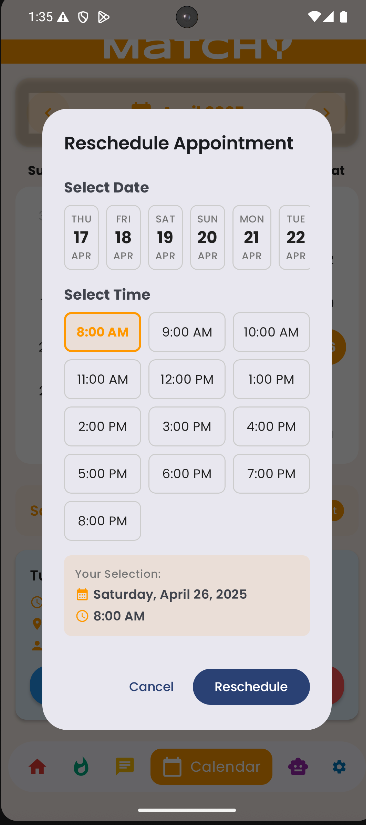
Co-led a team of 5 to design and develop Mentor Match, a mobile tutor-student matching application featuring an intuitive swipe-card interface for discovering and connecting with tutors. Built with Kotlin in Android Studio following the Model-View-ViewModel (MVVM) architecture...
Read moreComputational Modeling of Speech-Based Biomarkers for ALS Assessment
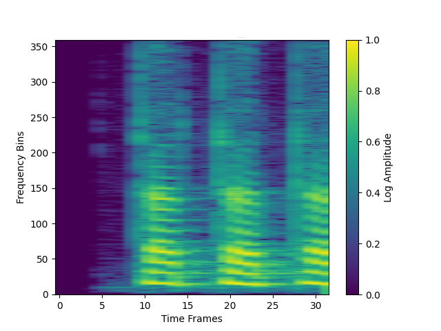
Currently participating in the Speech Analysis for Neurodegenerative Diseases (SAND) challenge, organized by ICAR-CNR's Institute for High Performance Computing and Networking, with the opportunity for top-performing teams to present at IEEE ICASSP 2026. The challenge addresses the critical need for objective, noninvasive biomarkers to enable early diagnosis and monitoring of neurodegenerative diseases, particularly amyotrophic lateral sclerosis (ALS).
Working to develop machine learning models for two complementary tasks using speech signal data. The first task involves multi-class classification to categorize dysarthria severity across five classes ranging from severe ALS-related speech impairment to healthy speech. This is developing my skills in audio signal processing, including feature extraction from patient speech recordings, and implementing an audio spectrogram transformer architecture to classify severity levels while addressing class imbalance, where the dataset contains significantly more samples from some severity categories than others (such as more healthy patients than those with severe dysarthria).
The second task focuses on predictive modeling to forecast disease progression by estimating future ALSFRS-R scale values based on historical patient data. This prediction challenge is strengthening my abilities in analyzing data collected over time from the same patients, building regression models to predict numerical severity scores, and understanding how speech impairment patterns evolve as the disease progresses.
Through this ongoing work, I am gaining experience in biomedical signal analysis and transformer-based architectures for audio processing, learning to extract clinically meaningful acoustic features such as prosody, phonation quality, and articulation metrics from spectrogram representations. I am developing skills in data preprocessing and augmentation techniques specific to audio data, as well as hyperparameter optimization to maximize model performance.
This challenge is enhancing my research and literature review skills as I examine the use of audio spectrogram transformers for dysarthria classification, evaluating how this state-of-the-art approach performs on phonation-based speech data rather than word-based speech, specifically sustained vowels (A, E, I, O, U) and rhythmic syllable sequences (TA, PA, KA). This interdisciplinary project bridges computer science, machine learning, and clinical neuroscience, integrating signal processing and health data analysis to develop tools that could aid in the early detection and monitoring of neurodegenerative diseases.
Tutle: A Tutor-Student Marketplace
Co-leading a team of 7 developers to build a comprehensive commercial tutoring mobile application that connects students with qualified tutors through a secure, feature-rich platform. The application addresses both sides of the tutoring marketplace: empowering tutors with professional practice management tools while providing students with an intuitive interface for discovering and engaging with quality educators. Built with React Native to provide a seamless cross-platform experience on both iOS and Android devices, leveraging a single codebase for efficient development and consistent user experience. The backend infrastructure utilizes PostgreSQL for robust relational data management, handling complex relationships between users, sessions, payments, and reviews.
For tutors, the application provides a comprehensive session management dashboard for tracking student progress, scheduling, and earnings, along with a custom booking platform that allows them to set availability, pricing, and subject specialties. The system includes automated session reminders, calendar integration, and performance analytics to help tutors monitor student engagement and optimize their teaching practice. For students, the platform offers advanced tutor discovery with filtering capabilities by subject, location, price range, and availability. Students have access to their own session management interface for organizing upcoming appointments, tracking completed sessions, and managing their tutoring schedule. The platform includes an innovative Tamagotchi-style gamification feature that motivates continued engagement by rewarding students with points for booking sessions, attending their tutoring appointments, and leaving reviews. These earned points can be used to care for and interact with their virtual companion, creating a playful incentive system that encourages consistent participation in their educational journey. Students can also access their complete session history, visualize their progress over time, and utilize an integrated review and rating system to inform future booking decisions.
Safety and trust are foundational to the platform. All tutors must submit vulnerable sector checks before being approved to offer services, ensuring student safety for in-person sessions. The application implements secure payment processing through Stripe, with payments processed immediately upon session booking to protect both parties and streamline the transaction flow. A key feature of the platform is the real-time map integration that allows users to securely share their location and find each other for in-person tutoring sessions. This feature prioritizes user privacy by only sharing location data during active session windows and implementing proximity-based meeting coordination to ensure safe and convenient meetups.
The project architecture emphasizes scalability and maintainability, leveraging Supabase as the backend-as-a-service platform to manage database operations, authentication, and real-time data synchronization. The implementation utilizes Supabase's client libraries for efficient database queries and real-time subscriptions for live booking updates and messaging features. The system implements secure authentication and authorization protocols to protect sensitive user data and payment information. Integrating AI-powered development assistants into the workflow to optimize code quality, debug efficiently, and explore alternative architectural approaches has enhanced development velocity and code reliability.
As co-lead, I am responsible for UI and UX design decisions, technical architecture decisions, sprint planning and task delegation, code review processes, and ensuring adherence to best practices in mobile development. This project is developing my skills in React Native mobile development and cross-platform optimization, team leadership and project management, PostgreSQL database schema design, backend integration with Supabase, payment gateway integration with the Stripe API, real-time location services and mapping APIs, security best practices and user data protection, AI-assisted development workflows, stakeholder communication and product planning.
4D Body Scanning for Remote Health Monitoring
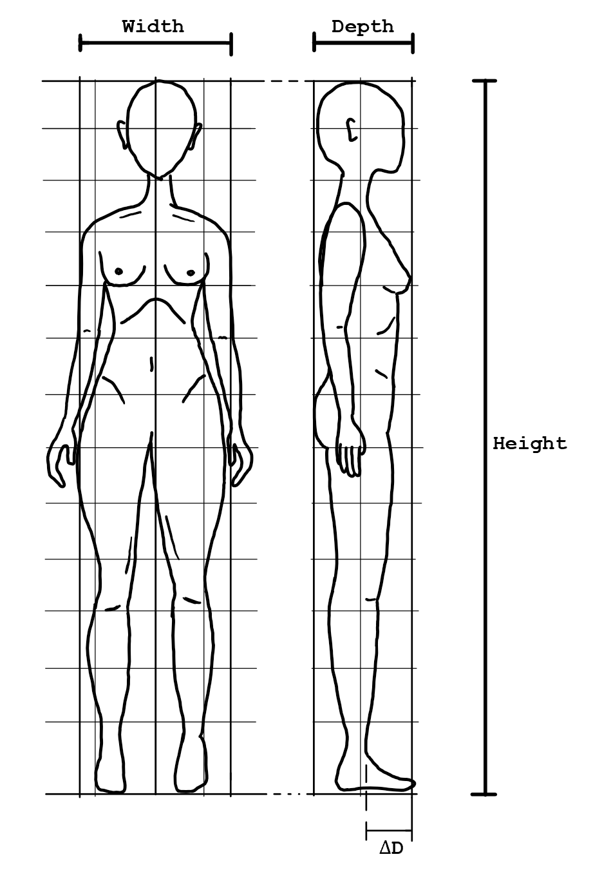
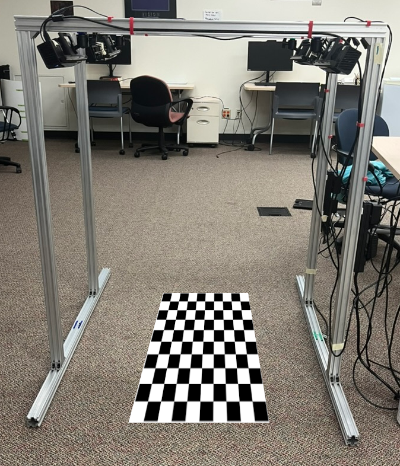
I collaborated with a fellow student under the supervision of Dr. Jeffrey Davis to develop a real-time 4D body scanning system capable of capturing dynamic human motion. The project leveraged OpenCV for computer vision processing, the Point Cloud Library (PCL) and Open3D for 3D data manipulation and reconstruction.
During the development phase, I conducted a comprehensive feasibility analysis of two competing system architectures: a stationary multi-sensor array and a rotational scanning design. By examining human and practical constraints against the limitations of each system, we determined that the rotational approach was necessary to achieve our target frame rate while maintaining scan quality. This process deepened my understanding of system architecture design and the engineering trade-offs involved in design. The project required extensive work in system calibration and synchronization to ensure accurate data capture across multiple sensors as well as point cloud processing and registration for the merging of and creating on 3D + time datasets. The alignment algorithms that were utilized were Iterative Closest Point and Fast Point Feature Histograms with RANSAC. I developed skills in sensor calibration and hardware-software integration, particularly when prototyping with motorized tracks, stepper motors, and spinning LIDARs—components that informed our design decisions even though they didn't appear in the final implementation.
This experience strengthened my abilities in data pipeline development, managing the flow from raw sensor input through processing stages to final output, as well as technical documentation to track our design iterations and performance benchmarks. The collaborative nature of the project enhanced my research communication skills and ability to integrate complementary technical expertise toward a unified goal.
Mentor Match
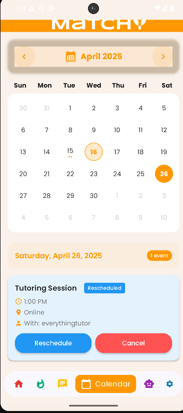
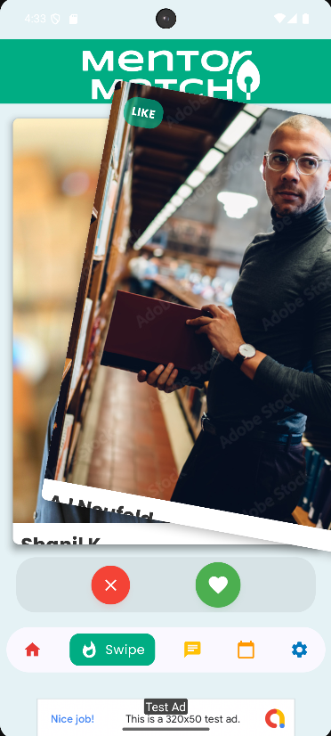
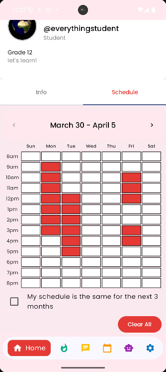
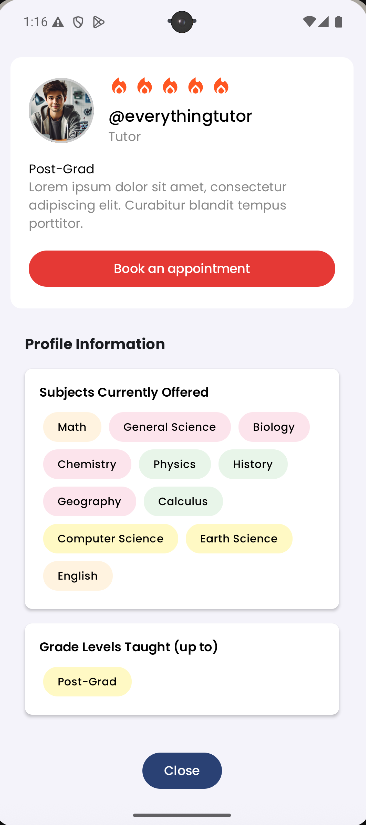
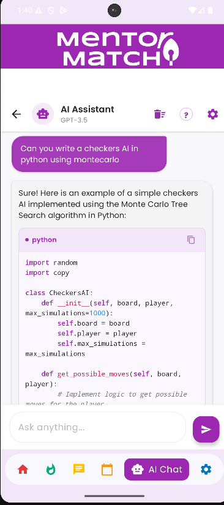
I co-led a team of 5 to design and develop Mentor Match, a mobile tutor-student matching application featuring an intuitive swipe-card interface for discovering and connecting with tutors. It was built with Kotlin in Android Studio following the Model-View-ViewModel (MVVM) architecture to ensure separation of concerns, maintainability, and testability. The back-end was integrated with Firebase, including Firebase Authentication for secure user login, Cloud Firestore for real-time database management, and Firebase Storage for user profile media.
We implemented custom UI components including a swipe-card gesture interface, a calendar and availability interface, real-time chat messaging, and a review and booking system. The availability management features allowed users to input their availability, behaving as a bitmap that could efficiently find openings in the schedule of students and tutors which informed our matching algorithm. The real-time chat system used Firebase Cloud Messaging to facilitate seamless communication between matched users.
The application architecture emphasized clean code principles and scalability, with a well-structured repository pattern for data access and reactive programming using LiveData and ViewModel for UI state management. Implemented proper error handling and input validation to ensure a robust user experience. The team engaged in agile development practices, including sprint planning, pair programming, and iterative feature deployment. Used Git for version control.